«CEOs never open with “good morning everyone”»
Сверху говорящая голова, снизу ASMR-петля (нож срезает язык-апельсин). Дальше «тренер» разносит участников встречи за слабые фразы и переходит в скрипт «I’m 47».
Открыть в Ad Library ↗Рынок «тренажёров речи» в рекламе Meta гораздо активнее, чем видно по заметкам. Больше всего закупаются Bitesy, Vocal Image, Gleam, PatterAI и анонимная сеть страниц «Articulation». Главная находка: один и тот же сценарий «I’m 47 — articulation training 9 minutes a day» крутят сразу три рекламодателя. Вторая находка: Bitesy, Gleam, PatterAI и Wellspoken уже продают оценку речи цифрой (34% → 92%, 68, 76/100). Это тот же aha-момент, что и у Speakline, поэтому он больше не уникален. Свободным остаётся другое: подготовка к конкретной дате. Ни один крупный рекламодатель не строит хук вокруг «собеседование через 3 дня».
Что здесь факт. Число активных объявлений в США, домены, тексты, расшифровки, кадры, даты старта и число копий. Срез на 3 ноября 2026 года.
Что здесь гипотеза. Что именно работает. По США Ad Library не показывает охваты, показы и бюджеты. Косвенные признаки: позиция в выдаче (она отсортирована по показам), срок показа и то, что конкуренты копируют друг у друга.
Как смотрел видео. По 35 роликам — 15 кадров (чаще в первые 12 секунд) и склейки. По 33 роликам есть расшифровка. Звук и подачу не оценивал.
Искал по запросам «public speaking app», «filler words», «articulation», «speak with confidence», «speech training», «communication skills app», «speechmaxxing», по названиям брендов и по доменам. Считал активные объявления на странице бренда и на связанных страницах-персонах с тем же доменом.
| # | Бренд | Активных в US | Куда ведёт | Как закупается | Чем похож на Speakline |
|---|---|---|---|---|---|
| 1 | Bitesy (Speak with Confidence) | 109 + персоны | Web-квиз comm.bitesy.org | Все объявления запущены с 8 октября, то есть идёт агрессивный запуск. Длинные AI-видео на 1,5–7 минут, страницы-«амбассадоры». Та же компания параллельно продаёт «Duolingo для AI» (ai.bitesy.org), там обещания дохода. В подсчёт эти объявления не вошли. | Web2app с квизом, «9 minutes a day», AI-коуч, который ставит оценку в процентах. Ближе всех по механике. |
| 2 | Vocal Image | 218 + персона | Web-квиз go.vocalimage.net | Самые старые активные объявления — с 13 мая. Есть страница-персона Speak with Impact, есть версии на испанском для US. | Прямой конкурент: та же цена и та же модель web2app. |
| 3 | Gleam | 154 | App Store (sng.link) | С июля: история основателя, мультяшные объяснения, запуск от аккаунта креатора, много DCO. | «Gym for social skills»: 60 секунд на случайную тему и оценка. Шире Speakline — флирт и small talk. |
| 4 | PatterAI | 149 | App Store (appstack.link) | С апреля: UGC и записи экрана приложения, отзывы «40,000+». | Daily 60, оценка /100, разбор пауз, темпа и слов-паразитов. |
| 5 | Сеть «Articulation» | 81 | learndemandskills.com | 9+ страниц-персон (Olivia Articulation, Michelle, Sophie, Robert и др.), одно видео на EN, PT, ES и FR. | Курс «28-day charisma challenge», «15 minutes a day». Копирует скрипты Bitesy и Vocal Image. |
В заметке у PatterAI около 130 объявлений, у Wellspoken около 21, у Vocal Image около 350 (без фильтра по стране). Сейчас в US: PatterAI 149, Wellspoken 10, Vocal Image 218. Bitesy, Gleam и сети «Articulation» в заметке нет, а они в тройке самых активных.
Один и тот же текст почти дословно повторяется у Vocal Image, Bitesy и сети «Articulation», меняются только картинка и имена. Если конкуренты копируют один сценарий, скорее всего, он окупается хотя бы у того, кто его придумал. Самые старые версии у Vocal Image, так что, вероятно, автор — он.
«Designed for professionals over 40» прямо называет возраст зрителя. Это риск по правилу Meta о личных атрибутах. «In 14 days you’ll be the best speaker in any room» — обещание результата без данных. «My boss says I have the best articulation» — AI-отзыв, похожий на настоящий, а FTC такое запрещает. Bitesy и Articulation ставят мелкую подпись «AI-generated. Not a real-life testimonial», но от рисков с обещаниями она не спасает.
Человек говорит фразу, AI ставит процент или балл, фраза исправляется, цифра растёт: 34% → 71% → 92%. Так делают Bitesy (видеозвонок с AI-аватаром), Gleam (68 после 60 секунд), PatterAI (76/100), Wellspoken (532/1000).
Запрет на привычную фразу в первой секунде: «CEOs never open with “good morning everyone”», «Never introduce yourself by saying “Hi, my name is”», «Don’t say “sorry I’m late”», «Don’t say “nice to meet you”». Зритель узнаёт себя и остаётся досмотреть, что говорить вместо этого.
Vocal Image: BASIC и PRO, один человек говорит «Sorry, quick question…» и «Quick question.», субтитры красные и зелёные. Wellspoken: «You now / Your potential», «Baseline / Trained». Разница видна без звука.
«Get coffee. Let the adults talk», «I landed this client. I’ll take it from here», вопрос со сцены и ступор. Wellspoken снимает это AI-мультфильмом за 30–50 секунд. Финал — экран приложения с упражнением.
Колесо тем, таймер, честная оценка: «how fast you talked, how many times you said um». Gleam, PatterAI и Wellspoken (Daily 60). Показывает продукт и игру одновременно.
«3 underrated hobbies that make you smarter», «hobbies that make you disgustingly interesting». Приложение — один пункт из трёх-четырёх. Wellspoken запускает такие ролики от имени креаторов (lyd.speaksup, speakwithtiffy).
Bitesy: сверху спикер, снизу нож срезает «язык» из апельсиновой корки. Articulation: пресс давит золотой слиток с текстом хука. Глаз держится на петле, пока звучит хук.
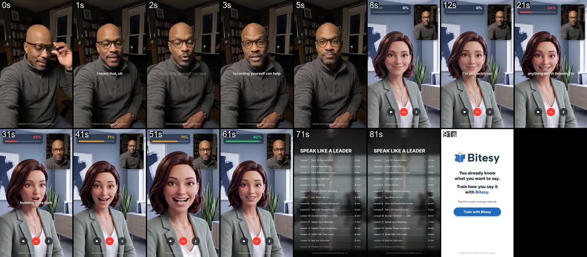
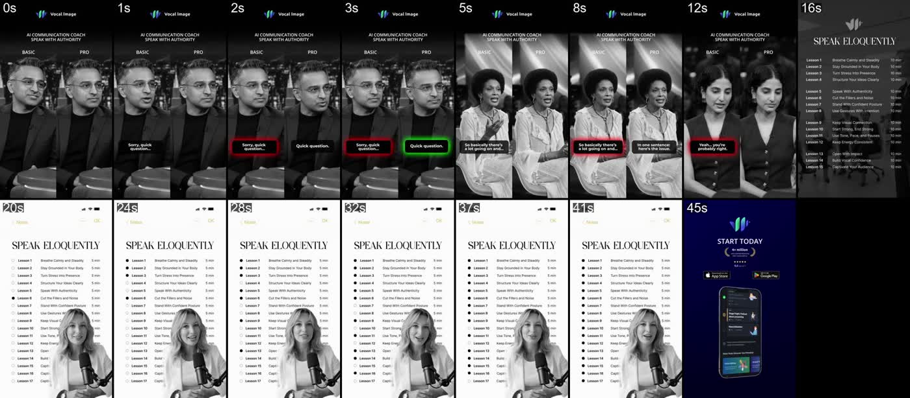
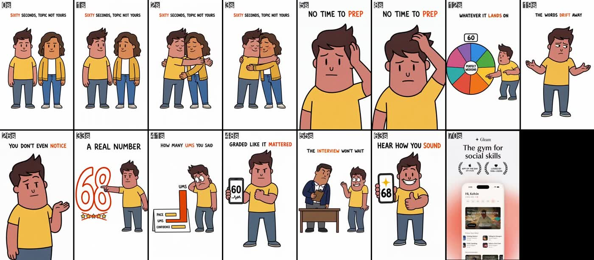
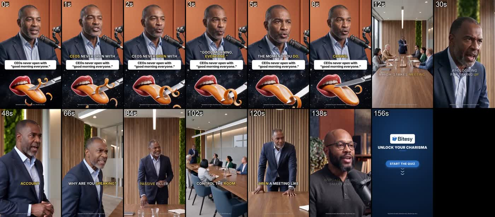
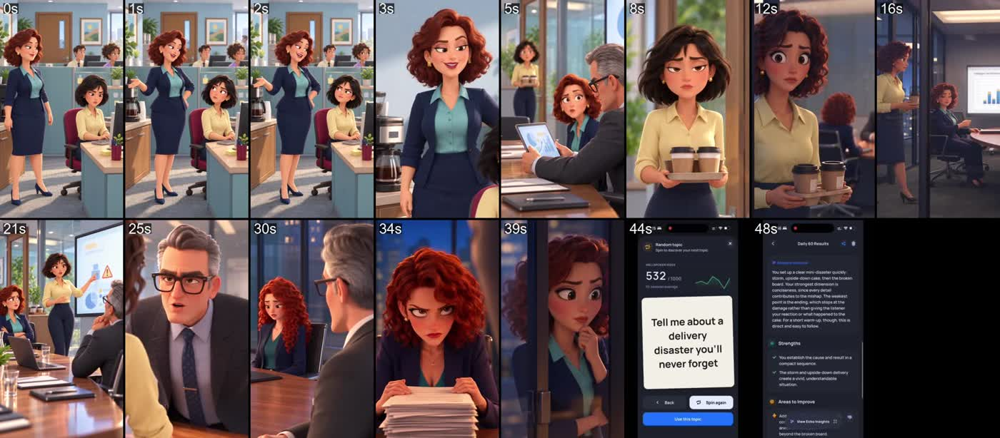
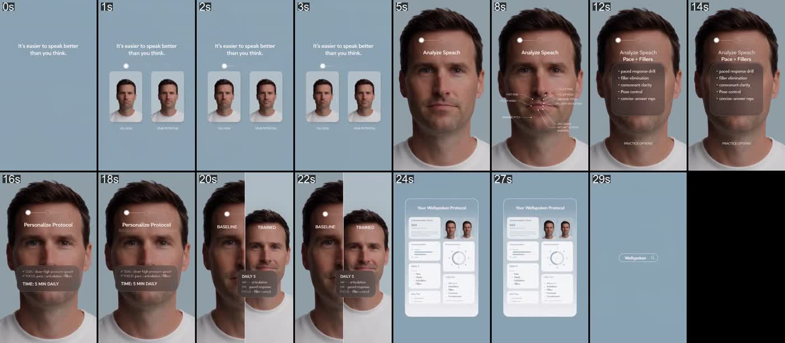
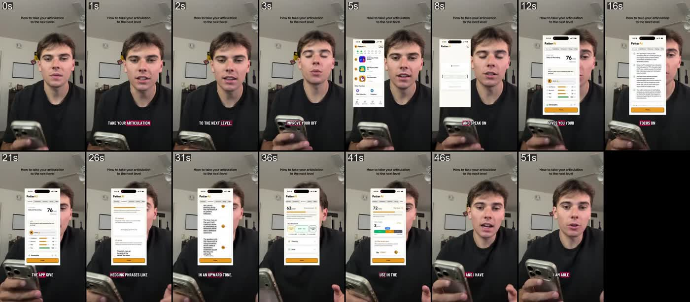
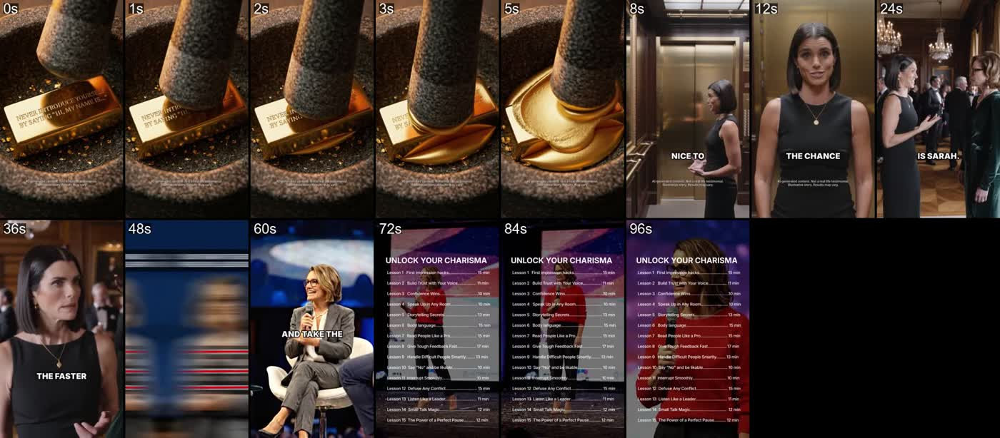
В «Конкурентах» сказано, что у web2app-конкурентов человек не говорит ни секунды до оплаты. Для Vocal Image это по-прежнему так. Но Bitesy, Gleam, PatterAI и Wellspoken уже показывают в рекламе оценку речи цифрой. Speakline стоит опираться не на «у нас есть оценка», а на «оценка бесплатно, за 10 секунд, до оплаты».
Почти все хуки про статус и харизму вообще. Привязку к реальной встрече («собеседование через 3 дня») не использует никто из пяти. Это совпадает с JTBD №1 Speakline и с хуком из онбординга: «Job interview in 3 days? Find out how you sound in 10 seconds».
По заметке Capstone CPM в US $23 и LTV/CAC 0.74×. Пятеро конкурентов одновременно масштабируют похожие креативы, так что аукцион по этой аудитории, скорее всего, дорогой. Это ещё один довод за тест в UK, хотя данных о ставках конкурентов нет.
Одинаковые ролики, запущенные с разных объявлений, считаю за один (по ID видео). Порядок: позиция в выдаче (она отсортирована по показам), потом срок показа и число копий. Карточка ведёт в Ad Library.
Разобрал первую страницу выдачи: 49 объявлений, после склейки дублей по ID видео осталось 33 разных креативов. Ниже 10 лучших по позиции в выдаче, сроку показа и числу копий.
«CEOs never open with “good morning everyone”»
Сверху говорящая голова, снизу ASMR-петля (нож срезает язык-апельсин). Дальше «тренер» разносит участников встречи за слабые фразы и переходит в скрипт «I’m 47».
Открыть в Ad Library ↗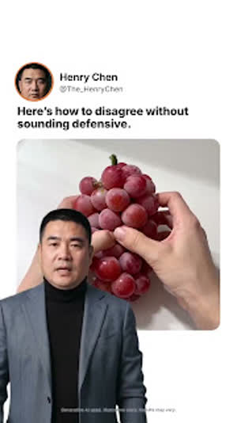
видео«Here’s how to disagree without sounding defensive»
Тот же ролик с другим первым кадром — Bitesy тестирует только хук.
Открыть в Ad Library ↗«Never introduce yourself by saying “Hi, my name is”»
Слово в слово совпадает с роликом сети Articulation: одна и та же студия или прямое копирование.
Открыть в Ad Library ↗Видеозвонок с AI-коучем: 0% → 34% → 71% → 92%
Электрик представляется, AI-аватар ставит оценку убедительности и поправляет фразу. Шкала в углу растёт после каждой попытки. Самый близкий к Speakline креатив.
Открыть в Ad Library ↗«Don’t say “Sorry I’m late.” Say “Thanks for waiting.”»
Список «не говори / говори» от «амбассадора» (страница-персона Leadership Professor Daniel Eze), затем скрипт «I’m 47».
Открыть в Ad Library ↗«Hi, I’m Amira. I work in IT.» — «34%. That’s how convincing that was.»
Тот же формат оценки в процентах: 34 → 71 → 92. «Say what you do, not what you are.» CTA: «record a before you’ll love to delete».
Открыть в Ad Library ↗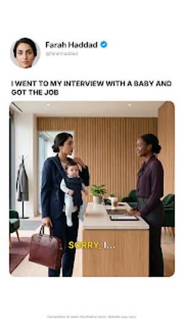
видеоРазобрал первую страницу выдачи: 32 объявлений, после склейки дублей по ID видео осталось 23 разных креативов. Ниже 10 лучших по позиции в выдаче, сроку показа и числу копий.
«Sorry, quick question…» → «Quick question.»
Сплит BASIC / PRO: один и тот же человек говорит слабую и сильную версию фразы, красные и зелёные субтитры. Потом список из 17 уроков в Notes и концовка «4+ million».
Открыть в Ad Library ↗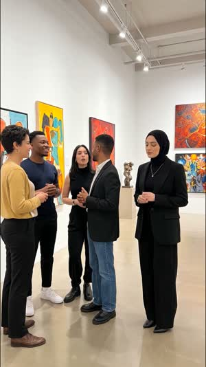
видео«You ask “How are you?” and then just go blank»
Сценка на вернисаже: героиня глохнет в small talk, дальше диалог-возражение «How old are you? 47. Perfect» и экран плана.
Открыть в Ad Library ↗«Nobody tips for the drink. They tip for the conversation»
Мини-сериал у барной стойки: бармен с полной банкой чаевых учит новичка. 3:52, сцены повторяются уже «после тренировки».
Открыть в Ad Library ↗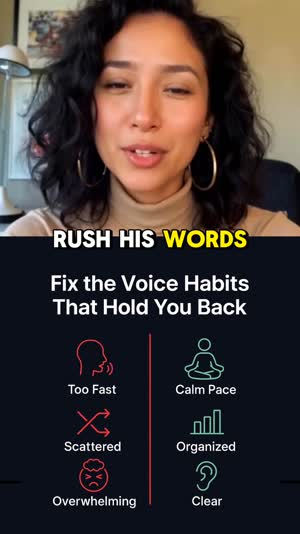
видео«How rare is your voice type?»
11 секунд: UGC-реакция → экран «Fix the voice habits» → каталог. Крючок-тест вместо обещания.
Открыть в Ad Library ↗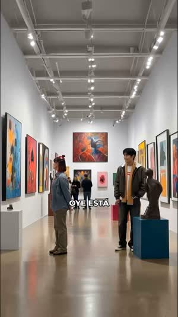
видео«Oye, ¿está bien si yo…?» (испанская версия)
Тот же скрипт «I’m 47 — articulation training 10 minutes a day» на испанском для US-аудитории.
Открыть в Ad Library ↗«Running out of words after two minutes?»
Small talk-боль, то же сочетание: сценка → диалог-возражение → план.
Открыть в Ad Library ↗«Your tone decides if they listen or forget»
Короткая версия сплита BASIC / PRO с персонажной страницы Speak with Impact.
Открыть в Ad Library ↗«Confidence isn’t loud — it’s controlled»
6:47 — длинная AI-драма в офисе с тем же финальным диалогом и квизом.
Открыть в Ad Library ↗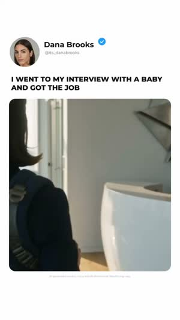
видео«In high-stakes rooms, clear delivery beats speaking more»
4:48, 5 копий объявления — самый размноженный креатив Vocal Image.
Открыть в Ad Library ↗Разобрал первую страницу выдачи: 30 объявлений, после склейки дублей по ID видео осталось 27 разных креативов. Ниже 10 лучших по позиции в выдаче, сроку показа и числу копий.
«I would see a girl, but it would be so hard to approach her…»
История основателя: «That was me for years… built Gleam. It’s kind of like Duolingo, but for speaking». Запущено от аккаунта креатора (charles.unemployed), идёт с 16 июля.
Открыть в Ad Library ↗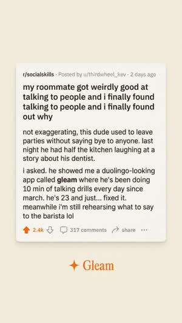
DCOДинамический креатив (DCO)
Открыть в Ad Library ↗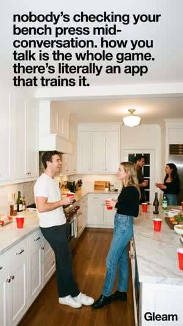
DCOДинамический креатив (DCO)
Открыть в Ad Library ↗«Nobody cares about how much you can bench»
20 секунд, скетч + «5 minutes a day».
Открыть в Ad Library ↗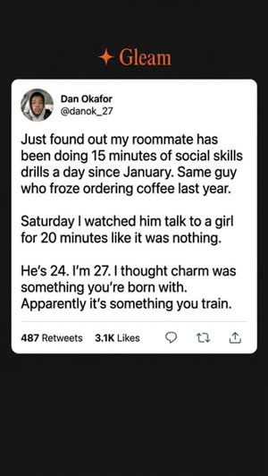
DCOДинамический креатив (DCO)
Открыть в Ad Library ↗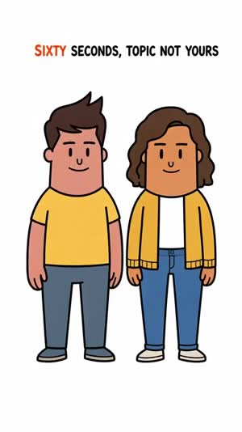
видео«60 seconds on the clock on a random topic you didn’t pick»
Мультяшный explainer: колесо тем → 60 секунд речи → честная цифра 68, график «pace / ums / confidence». «Hear how you actually sound before someone else does.»
Открыть в Ad Library ↗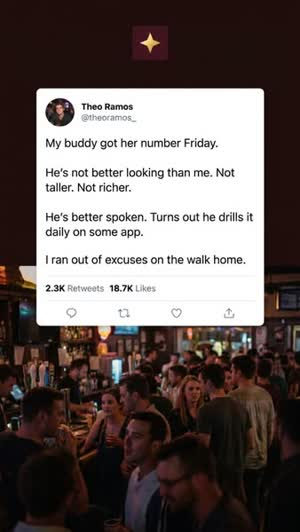
DCOДинамический креатив (DCO)
Открыть в Ad Library ↗Динамический креатив (DCO)
Открыть в Ad Library ↗«Don’t ever say “nice to meet you”, always say “nice to see you”»
Совет-лайфхак → история основателя → приложение.
Открыть в Ad Library ↗Разобрал первую страницу выдачи: 30 объявлений, после склейки дублей по ID видео осталось 30 разных креативов. Ниже 10 лучших по позиции в выдаче, сроку показа и числу копий.
«How to take your articulation to the next level»
UGC-парень с телефоном, поверх — запись экрана: Daily 60 → оценка 76/100, разбор hedging и интонации. Без склеек, 52 с.
Открыть в Ad Library ↗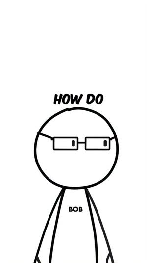
видео«When I open my mouth, my brain just hits the Windows error sound»
Скетч-диалог двух персонажей. «Talking equals intelligence», «Duolingo on steroids».
Открыть в Ad Library ↗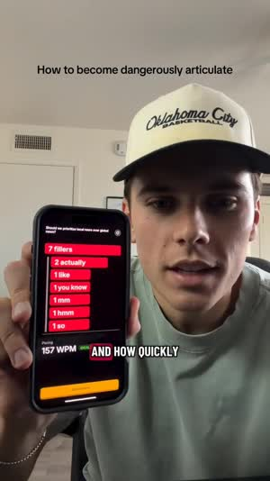
DCO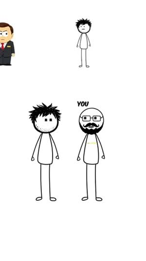
видео«You never get the raise you deserve»
Боль карьеры: «corporate ladder ain’t about hard work, it’s about communication».
Открыть в Ad Library ↗«The fastest way to become dangerously well-spoken»
16 с: девушка с книгой «How to Talk to Anyone» → «switch to this Duolingo-style app» → отзывы «Trusted by 40,000+».
Открыть в Ad Library ↗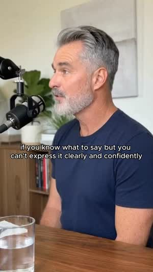
DCO«Some people always seem to know what to say…»
Random topic, 60 секунд, разбор: «structure, pacing, confidence, filler words».
Открыть в Ad Library ↗«How to ruthlessly rebuild your articulation in 5 to 10 minutes a day»
«Doomscrolling trains your brain for silent input» — объяснение, почему без практики вслух навык падает.
Открыть в Ad Library ↗Разобрал первую страницу выдачи: 30 объявлений, после склейки дублей по ID видео осталось 30 разных креативов. Ниже 10 лучших по позиции в выдаче, сроку показа и числу копий.
«Never introduce yourself by saying “Hi, my name is”»
Первые 5 секунд — ASMR: пресс давит золотой слиток с текстом хука. Дальше тот же скрипт, что у Bitesy. Подпись «AI-generated content. Not a real-life testimonial».
Открыть в Ad Library ↗«Tomorrow morning, we’re starting the 28-day charisma challenge»
24 секунды, без склеек. Челлендж с датой старта и «15 minutes a day».
Открыть в Ad Library ↗Португальская версия
Сеть крутит одно видео на EN, PT, ES, FR с разных страниц-персон.
Открыть в Ad Library ↗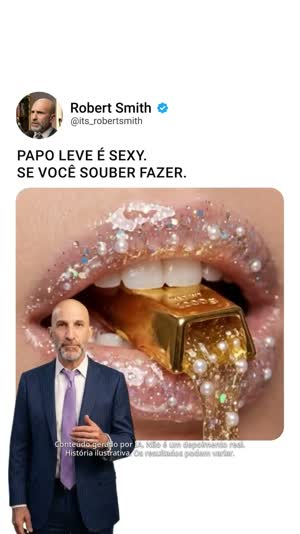
видеоПортугальская версия, 2:17
Открыть в Ad Library ↗5:52, португальский
Открыть в Ad Library ↗Испанская версия, 73 с
Открыть в Ad Library ↗Французская версия
Открыть в Ad Library ↗Французская версия, 2:24
Открыть в Ad Library ↗Английская версия, 3:39
Открыть в Ad Library ↗Португальская версия, 2:23
Открыть в Ad Library ↗Разобрал первую страницу выдачи: 10 объявлений, после склейки дублей по ID видео осталось 10 разных креативов. Ниже 10 лучших по позиции в выдаче, сроку показа и числу копий.
«Three underrated hobbies that can genuinely make you smarter»
Креатор lyd.speaksup, нативный листикл. Приложение — пункт №2: «live role play… a workout for your brain». Запуск от имени креатора (whitelisting).
Открыть в Ad Library ↗«It’s easier to speak better than you think»
«You now / your potential» → сканирование лица «fast pace, filler words, monotone pitch» → «Baseline / Trained» → протокол «5 min daily».
Открыть в Ad Library ↗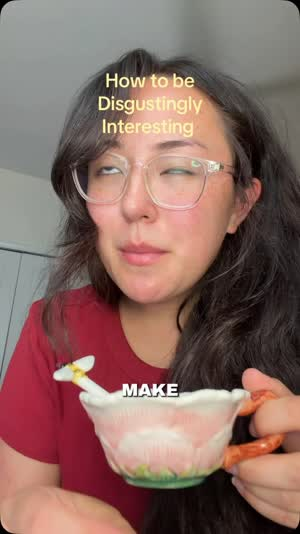
видео«Hobbies that make you disgustingly interesting to be around»
Тот же листикл, приложение спрятано в пункт №3 («speed breakdown drill»).
Открыть в Ad Library ↗«Get coffee. This is a big client meeting. Let the adults talk.»
AI-мультфильм в стиле студийной анимации: стажёрку унижают, она отвечает цифрами и выигрывает. Финал — экран Daily 60 и оценка 532/1000.
Открыть в Ad Library ↗«If you would like to become more well-spoken…»
Креатор даёт упражнение на беглость, приложение — в конце.
Открыть в Ad Library ↗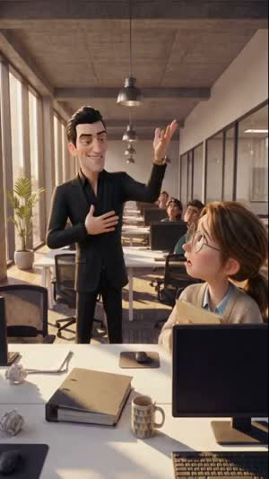
видео«I landed this client. I’ll take it from here.»
30 с: коллега присваивает клиента. Без финала — «Before you go, anything to say for yourself?» обрывает на напряжении.
Открыть в Ad Library ↗«“Is this product safe?” One question on stage — and her mind went blank»
Ступор на сцене → AI-коуч.
Открыть в Ad Library ↗Источник: Meta Ad Library через ScrapeCreators, страна US, только активные объявления, срез 3 ноября 2026 года. Расшифровки — из ScrapeCreators, кадры извлечены из видео.